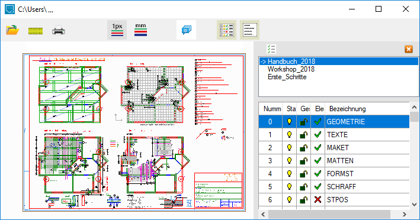
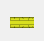
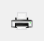
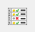
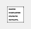
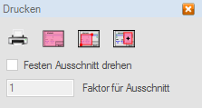
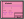
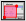
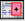

Anwendung zum Betrachten und Ausgeben von ISBCAD Zeichnungen.
Anwendungsoberfläche
 |
ISBVIEW mit geöffneter ISBCAD Zeichnung und eingeblendeter Profil- und Folienliste. |
Die Funktionsleiste
Datei öffnen/lesen: Ruft die Dateiauswahl auf. |
|
 |
Messen: Abfrage der X- und Y-Abstände, Entfernung (L) und der Lagerichtung (Winkel, W) zwischen zwei beliebigen Elementpunkten. |
 |
Drucken: Ausgabe der gesamten Zeichnung, eines beliebigen Zeichnungsausschnittes oder eines Ausschnittes definierter Größe als Zeichnung oder Plan. Die Druckeinstellungen können individuell konfiguriert werden. |
|
Darstellung der Linienbreiten auf dem Bildschirm: 1px: Linien werden, unabhängig von der Zoomtiefe, mit einer Breite von einem Pixel angezeigt. mm: Linien werden mit der im Anwenderprofil definierten Breite in Millimeter angezeigt (abhängig von der Zoomtiefe). |
Ein- und Ausblenden von Notizen. (s. Notizen) |
|
  |
Ein- und Ausblenden der Optionspaletten: Folienliste...: Blendet die Folienliste ein- oder aus. Anklicken des Profilliste...: Blendet die Profilliste ein- oder aus. In der Liste werden die Profile angezeigt, die im Profilmanager definiert sind. |
 -Icons blendet die Folie aus- oder ein. Anklicken des -Icons zeigt in der Folienliste nur Folien mit Elementen bzw. auch leere Folien an.
-Icons blendet die Folie aus- oder ein. Anklicken des -Icons zeigt in der Folienliste nur Folien mit Elementen bzw. auch leere Folien an.Zeichnungsansicht
Darstellung der Zeichnung mit den in der Menüleiste und in den Optionspaletten gewählten Einstellungen (Stiftbreite, Profil, Folien).
Sie können die Ansicht skalieren, verschieben oder auf die gesamte Zeichnung erweitern. Verwenden Sie folgende Mausgesten:
Gezielt einzoomen: |
Linke Maustaste halten und diagonal über den gewünschten Bereich ziehen (ca. 45°). |
Schrittweise ein-/auszoomen: |
Mit Mausrad über dem gewünschten Bereich scrollen. |
Ansicht verschieben: |
Linke Maustaste halten und horizontal oder vertikal ziehen. |
Vorherige Ansicht wiederherstellen: |
Linke Maustaste halten und V-förmig ziehen. |
Auf Plotfläche zoomen: |
Linke Maustaste halten und Ʌ-förmig ziehen. |
Gesamte Zeichnung anzeigen: |
Linke Maustaste halten und Z-förmig ziehen. |
Ausgabe der gesamten Zeichnung, eines beliebigen Zeichnungsausschnittes oder eines Ausschnittes definierter Größe als Zeichnung oder Plan.
§Klicken Sie in der Menüleiste auf .
§Wählen Sie im Dialog Drucken den gewünschten Bereich und/oder die Druckeinstellungen.
Drucken (Dialogbeschreibung)
Ausgabe als Zeichnung oder Plan auf einem Drucker/Plotter oder in eine druckbare Druckdatei.
Sie können für die Ausgabe einen bestimmten Ausschnitt wählen und den Drucker/Plotter den Anforderungen entsprechend konfigurieren.
Nach Auswahl des Druckbereiches/Zeichnungsausschnittes wird der Dialog ISBCAD Druckoptionen geöffnet.
» ISBCAD Druckoptionen (Dialog)
 |
Druckeinstellungen: Konfiguration des Druckers/Plotters mit Stiftzuweisung, Folienauswahl, Blattrandeinstellungen, Dateilisten und weiteren Angaben. Öffnet den Dialog Plotter-Konfiguration. |
|
 |
Alles drucken/plotten: Auswahl der gesamten Zeichnung. |
 |
Beliebigen Ausschnitt drucken/plotten: Auswahl eines beliebigen Zeichnungsausschnittes. §Klicken und ziehen Sie einen Rahmen um den Bereich, der gedruckt werden soll. |
 |
Festen Ausschnitt drucken/plotten: Platzierung eines in der Größe fest definierten Zeichnungsausschnittes. §Platzieren Sie den Rahmen per Mausklick über dem Bereich, der gedruckt werden soll. |
Festen Ausschnitt drehen
Nur wenn die Option Festen Ausschnitt drucken/plotten gewählt wurde. Dreht den definierten, festen Ausschnitt um 90°.
Faktor für Ausschnitt
Nur wenn die Option Festen Ausschnitt drucken/plotten gewählt wurde. Skaliert den Rahmen in der Zeichnungsansicht um den angegebenen Wert.
Siehe auch: